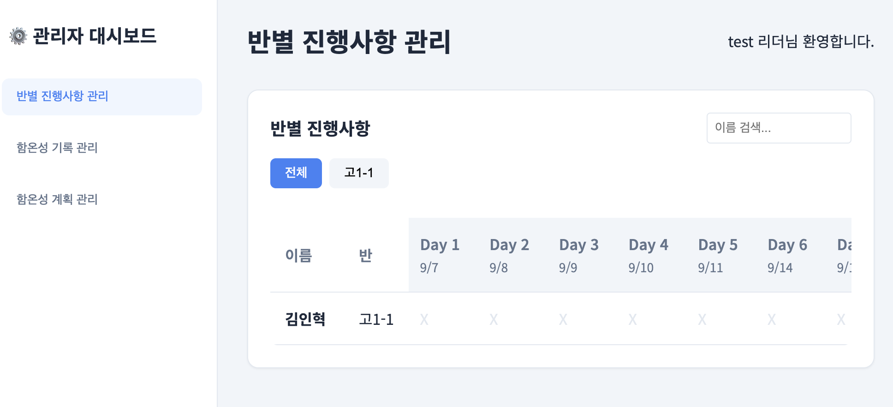

👨🏫 교사용 (리더/어드민) 가이드
청소년부 반 관리 및 학생 현황 모니터링 방법
1. 어드민 페이지 접속
선생님(리더) 권한을 가진 계정으로 로그인해야 관리자 기능에 접근할 수 있습니다.
- 일반 로그인 후 화면 우측 상단의 어드민 노란색 버튼을 클릭합니다.
- (만약 어드민 버튼이 보이지 않는다면, 총괄 관리자에게 권한 부여를 요청해주세요.)
2. 대시보드 및 읽기 진도 확인
반 학생들의 성경 읽기 진도와 기도 작성 현황을 한눈에 파악할 수 있습니다.

- 진도율 (퍼센트 바): 학생들이 전체 목표 대비 얼마나 읽었는지 표시됩니다.
- 최근 읽은 말씀: 가장 최근에 어느 본문을 완료했는지 확인합니다.
- 오늘의 함온성: 오늘 함온성(기도문)을 작성했는지 여부를 체크(O/X)로 보여줍니다.
3. 학생 및 반(Class) 관리
리더는 자신의 반에 속한 학생들만 보거나, 전체 학생을 관리할 수 있습니다 (권한에 따라 다름).
- 상단의 반(Class) 필터링 드롭다운을 통해 특정 반 학생들만 모아볼 수 있습니다.
- 어드민 권한이 있는 경우 학생들의 역할을 '학생(student)', '리더(leader)', '어드민(admin)'으로 변경할 수 있습니다.
- 새로운 학생을 등록하거나 정보를 수정하는 작업도 가능합니다.
4. 함온성 (기도문) 관리
학생들이 올린 기도문을 모니터링하고 피드백을 줄 수 있습니다.
- 어드민 대시보드의 '함온성 관리' 메뉴로 이동합니다.
- 날짜별로 학생들이 작성한 기도문을 모두 조회할 수 있습니다.
- 부적절한 내용이 포함되어 있거나 관리가 필요한 경우, 게시글을 숨기거나 삭제할 수 있는 기능이 제공됩니다.